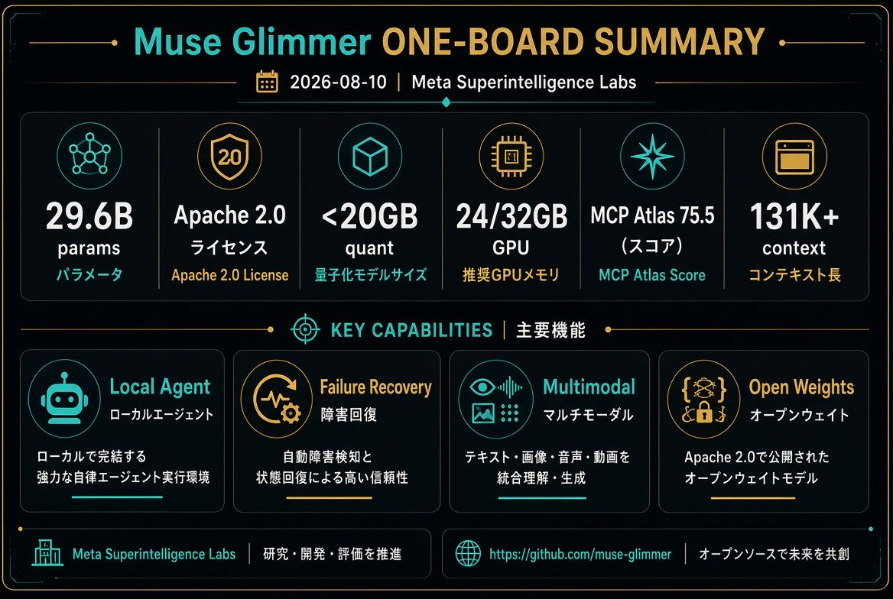
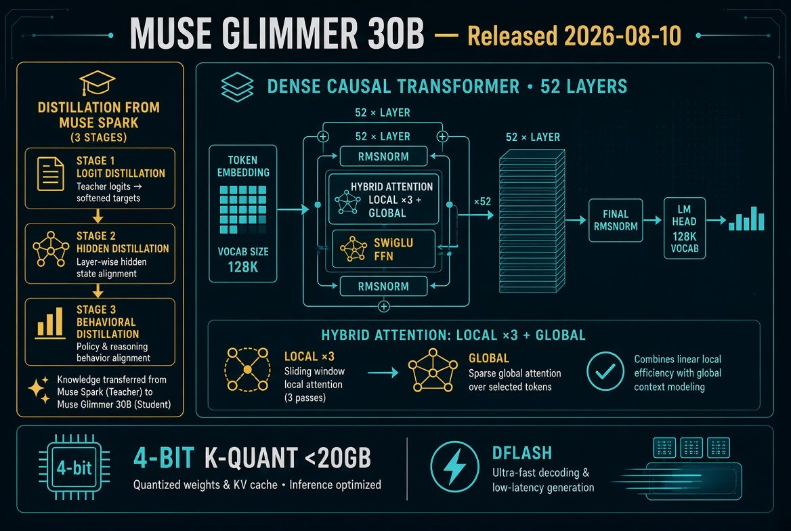
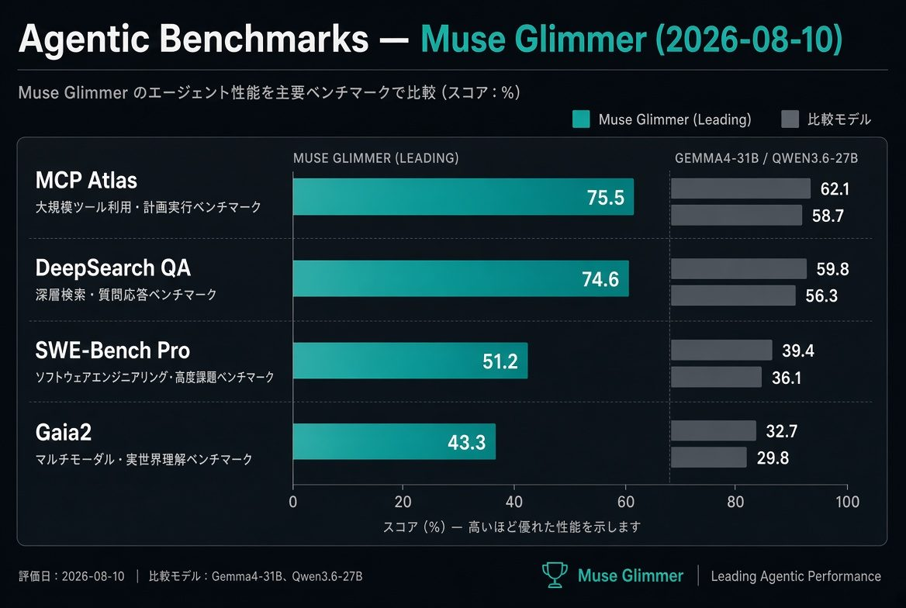

ONE-BOARD SUMMARY
1枚で見る Muse Glimmer
Muse Glimmerは、Meta Superintelligence Labsが公開したエージェント特化のオープンウェイトモデルである。クローズドなfrontierモデル「Muse Spark」からlogit distillationで知識を移譲し、さらにエージェント寄りデータでmid/post-trainingを重ねた。結果として「失敗したら診断してリトライする」「画面を見てツールを呼ぶ」といったループが最初から組み込まれている。
- 何が変わるか：クラウド依存のエージェントが主流だった中で、「オフライン・プライバシー・ベンダーロックなし」で本気の自律エージェントがコンシューマハードウェアで動く現実が生まれた。
- 何が変わらないか：平均的なノートPCでは動かない（24GB+VRAM/高スペックMacが必要）。frontier級の性能ではない。
- なぜ今か：Zuckerbergが同日に「個人向けスーパーインテリジェンスを広く分配する」エッセイを出し、オープン戦略を実務ツールとして着地させたタイミング。

ARCHITECTURE & DISTILLATION
技術の核心：なぜローカルで本気になるのか
Dense Causal Transformer（52層 / hidden 6656 / GQA 32Q-2KV）に、約1.8BのViT-G/14 Perception Encoderを統合。注意パターンは[Local×3, Global]のハイブリッドで、Sliding Window 2048を保ちつつ長コンテキストを実用的に扱う。
蒸留プロセス3段階でエージェント能力を焼き付ける
- Pre：Muse Sparkの出力をlogit distillation
- Mid：長コンテキスト＋エージェント寄りデータ＋豊富な推論トレース
- Post：SFT + on-policy distillation + RL（エージェント領域含む）
量子化 & 速度24/32GBに収めるための共設計
- 4-bit K-Quant：LM部分 <20GB
- K-Quant-17GB（24GB向け / 劣化~1%）
- DFlash speculative decoding：最大3.1x加速

AGENTIC CAPABILITIES
エージェントとして設計された機能群
- End-to-endタスク完遂：DeepSearch QA / MCP-Atlas / τ-Bench / SWE-Benchなどで評価。スキャフォールド内でコード書き・デバッグ・複数ターンを最後までやり切る。
- 信頼できるツール呼び出し：精密なスキーマ準拠を長時間ワークフローで維持。
- 失敗リカバリ：ツールが失敗・予期しない結果を返した場合、診断してリトライする（止まるだけではない）。
- マルチモーダル画面理解：専用Perception Encoderでスクリーンショット・チャート・ドキュメントを自然に扱う。
- Controllable Effort：システムプロンプトで推論強度を調整可能。

BENCHMARKS
同サイズ帯での位置づけ（Meta報告）
| ベンチマーク | Muse Glimmer | Gemma4-31B | Qwen3.6-27B |
|---|---|---|---|
| MCP Atlas (Public) | 75.5 | 54.2 | 62.5 |
| DeepSearch QA | 74.6 | 61.7 | 71.1 |
| SWE-Bench Pro | 51.2 | 36.9 | 50.2 |
| SWE-Bench Verified | 76.0 | 66.6 | 77.2 |
| OSWorld-Verified | 65.9 | 58.5 | 75.6 |
| Gaia2 | 43.3 | 36.4 | 40.0 |
エージェント系（ツール使用・end-to-end）で明確にリード。コンピュータ使用や一部コーディングではQwenが優位なケースあり。ベンダー報告のため独立評価の蓄積が今後重要。
DIFFERENCES & RECENCY
既存類似製品との違い / 新規性
1. 既存の類似製品（Gemma4-31B / Qwen3.6-27Bなど）と何が違うか
- 汎用モデルを後からエージェント化するのではなく、蒸留＋エージェント特化mid/post-trainingで失敗リカバリ付きend-to-endループを最初から組み込んでいる。
- Muse Sparkというクローズドfrontierからの知識移譲。
- 画面理解用の専用Perception Encoderをエージェント用途に統合。
- 量子化＋DFlashを「24/32GBで常駐可能」を目標にハードウェア共設計。
- Apache 2.0のクリーンさと、公開当日のエコシステム対応の速さ。
2. 最近出た新しい製品か
はい。極めて新しい。 2026年8月10日（昨日）公開。知識カットオフは2026年1月4日頃。ローカルエージェント特化のオープンウェイトモデルとして現時点で最新。
STRATEGIC CONTEXT
Zuckerbergのオープン戦略が「実務ツール」として着地した瞬間
同日にZuckerbergが約6500語のエッセイ「The Future is for Everyone」を公開。「個人向けスーパーインテリジェンスを広く分配する」立場を明確にした。クローズドなMuse Spark路線から、再びオープンウェイトを実務ツールとして出す転換でもある。Muse Spark 1.2のウェイト公開も「まもなく」と明言されている。
Ollama（特にMLX）・Hugging Face・transformers・llama.cpp・vLLMなどへの対応が公開当日〜翌日に始まっており、試せる状態が整っている。
LIMITATIONS & NEXT
限界と次の実験案
- ハードウェアの床は高い（24GB以上のVRAMまたは高スペックMacが必要。平均的なノートPCでは厳しい）。
- ベンダーベンチ中心。独立検証はこれから。
- 長時間・新規シナリオでのマルチステップエラーはまだ起こり得る。不可逆操作には人間確認を推奨。
- 音声非対応。動画はフレーム処理のみ。
次の実験案：Hugging FaceまたはOllamaで量子化版を落として、ローカルで「ファイル整理＋簡単なコーディングエージェント」を走らせる。失敗リカバリの挙動を観察するのが最も価値の高い第一歩。
THE BOTTOM LINE
クラウド依存のエージェント時代に、「オフライン・プライバシー・ベンダーロックなしで本気のエージェントが動く」を現実にした点こそが、このリリースの本質だ。Zuckerbergのオープン戦略が「研究発表」から「使えるツール」に着地した瞬間。
高スペック環境を持つAIエンジニアにとって、今週中に試す価値のあるモデル。
Sources
- Meta AI Research公式ブログ「Introducing Muse Glimmer」2026-08-10
- Hugging Face model card：meta-models/Muse-Glimmer-30B
- Ollama / LM Studio / Unsloth 対応発表
- VentureBeat, Business Insider, Mashable など即日報道
- Mark Zuckerberg X投稿・エッセイ「The Future is for Everyone」
2026-08-10 — AI Intelligence Hub / Day Slide ・ Generated with Grok Imagine Image 2.0 visuals